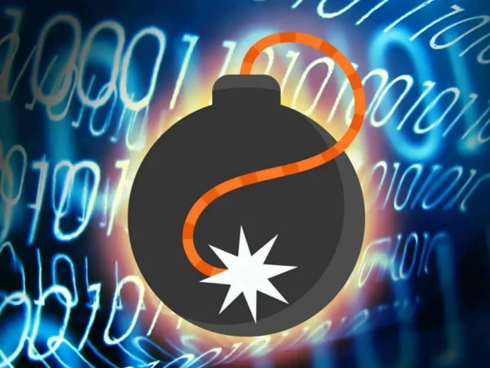

¿Qué es el scareware?

El objetivo final del scareware es engañar a los usuarios para que compren una versión falsa o inútil de software de seguridad, a menudo a un precio inflado. Esta versión falsa no proporciona ninguna protección real contra virus o malware y puede incluso empeorar la situación al instalar más malware en la computadora del usuario.
¿Como se propagan?
- Los ciberdelincuentes pueden colocar anuncios en línea que parecen ser mensajes legítimos de seguridad, como alertas de virus o advertencias de malware. Estos anuncios pueden aparecer en sitios web legítimos o ser parte de redes de publicidad maliciosa. 2. Pop-ups emergentes
- Los scareware a menudo se propagan a través de pop-ups emergentes que aparecen mientras los usuarios navegan por internet. Estos pop-ups pueden simular escaneos de seguridad del sistema o mensajes de advertencia de virus. 3. Descargas de software malicioso
- El scareware también puede ser descargado e instalado por los usuarios mientras intentan descargar software gratuito de internet. Los ciberdelincuentes pueden empaquetar el scareware con software legítimo o incluirlo como una opción durante el proceso de instalación.

1. Anuncios en línea engañosos 
Riesgos y consecuencias

¿Como protegerse?
- Instala y mantén actualizado un software antivirus y antimalware confiable en tu dispositivo. Descargar software solo de fuentes confiables
- vita descargar software de sitios web no oficiales o de dudosa reputación. Ten cuidado con los mensajes emergentes y las alertas de seguridad
- No hagas clic en ventanas emergentes o mensajes de alerta que aparezcan mientras navegas por internet, especialmente si provienen de fuentes desconocidas o sospechosas. No confíes en llamadas telefónicas no solicitadas
- Si recibes una llamada telefónica de alguien que afirma ser un técnico de soporte técnico o de seguridad y te informa sobre problemas de seguridad en tu computadora, ten precaución.
- Es importante estar atentos a los signos de posibles infecciones de malware.
- Hacer copias de seguridad regulares de los datos importantes para minimizar la pérdida en caso de ataque.

conclusiones y recomendaciones